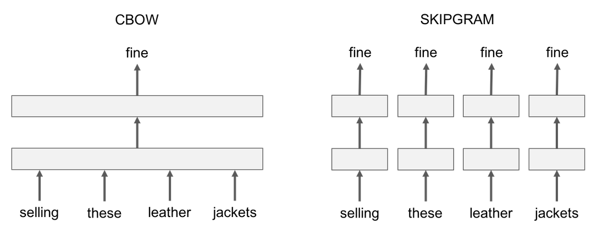
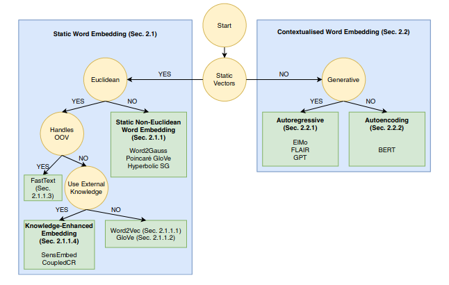

fastText
The fastText R package is an interface to the fastText library for efficient learning of word representations and sentence classification. More details on the functionality of fastText can be found in the
- fastText_updated_version (blog post)
- fasttext_language_identification (blog post)
- package documentation.
The official website of the fasttext algorithm includes more details regarding the supervised & unsupervised functions. The following image shows the difference between cbow and skipgram (models to compute word representations)

Moreover, the following figure - extracted from a survey (scientific paper) related to word embeddings and recent advancements in Large Language Models - shows the differences between static and contextualized word embeddings

You can either install the package from CRAN using,
install.packages("fastText")
or from Github using the install_github function of the remotes package,
remotes::install_github('mlampros/fastText')or directly download the fastText-zip file using the Clone or download button in the repository page, extract it locally (rename it to fastText if necessary and check that files such as DESCRIPTION, NAMESPACE etc. are present when you open the fastText folder) and then run,
#-------------
# on a Unix OS
#-------------
setwd('/your_folder/fastText/')
Rcpp::compileAttributes(verbose = TRUE)
setwd('/your_folder/')
system("R CMD build fastText")
system("R CMD INSTALL fastText_1.0.7.tar.gz")
#------------------
# on the Windows OS
#------------------
setwd('C:/your_folder/fastText/')
Rcpp::compileAttributes(verbose = TRUE)
setwd('C:/your_folder/')
system("R CMD build fastText")
system("R CMD INSTALL fastText_1.0.7.tar.gz")Use the following link to report bugs/issues (for the R package port),
https://github.com/mlampros/fastText/issues
Citation:
If you use the fastText R package in your paper or research please cite both fastText and the original articles / software https://CRAN.R-project.org/package=fastText:
@Manual{,
title = {{fastText}: Efficient Learning of Word Representations and
Sentence Classification using R},
author = {Lampros Mouselimis},
year = {2026},
note = {R package version 1.0.8},
url = {https://CRAN.R-project.org/package=fastText},
}